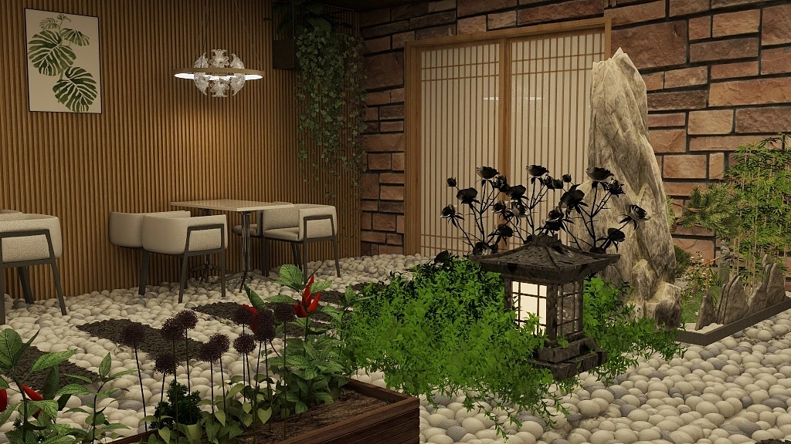
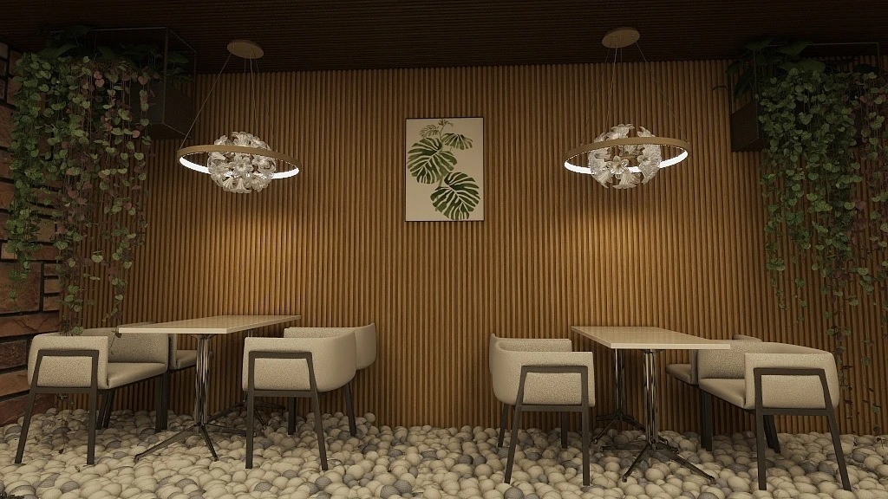

TOAST 烘焙所 — 让等待变成风景
小店最难的不是好看，是人挤在一起。 我用一道枯山水横在中间，把买面包的人和坐下来的人分开， 顺便给排队的十分钟找了点事看。
- Type
- 咖啡 / 烘焙零售
- Area
- 约 60㎡
- Seats
- 14 座 · 4 组
- Palette
- 木格栅 · 文化石 · 卵石
- Role
- 方案 / 建模 / 渲染

主视角：从入口看向吧台，展示柜与堂食区被一道格栅分开。
60 平米里有三条动线
一间烘焙店同时要装下三种人：拿了就走的、要现做咖啡的、 和想坐一小时的。它们的速度完全不同， 挤在同一条路上就会互相绊住——这是小店体验崩掉的主因。
于是空间沿长边被切成三层： 面包柜（快）→ 吧台（中）→ 堂食（慢）。 越往里走越慢，人流像变速带一样自然分层，不需要任何指示牌。
一道不能走的路
分隔两个区域最省事的办法是砌墙，但 60 平米砌不起墙。 我改用一片铺满白卵石的枯山水： 它在地面上是明确的「不可通行」，视线上却完全通透。
里面立一块竖向景石、一盏石灯笼、几丛绿植和一枝黑色干花。 石灯从内部打光——晚上它是这间店唯一的暖光源， 隔断因此变成了店里最亮的地方。
地面材质的切换（瓷砖 → 卵石）比任何护栏都更有效。 人不会踩上去，因为脚已经先知道了。


挡住脚，
但不挡住眼睛。
面包是暖色，所以背景要更暖
主材只有三样：竖向木格栅、文化石、灰白卵石。 格栅走满整面墙，密集的竖线把 60 平米在视觉上拉长； 文化石只出现在局部，用它的粗糙度对比格栅的规整。
照明全部走 2700K 暖光，且只打两处： 面包柜（重点照明，让烘烤色更馋人）和桌面（局部照明， 把人围出一圈领域感）。顶部保持暗， 天花越暗，商品越亮。
- 竖向木格栅
- Oak · 30mm 间距
- 文化石
- Split face
- 灰白卵石
- 40–60mm
- 米色布艺
- Bouclé
- 暖光
- 2700K
卵石很美，但要能扫
枯山水解决了动线，也带来了维护问题： 散落的卵石会被踢进通道，面包碎屑掉进石缝很难清。 落地版本应该把卵石做成预制树脂固化模块—— 保留质感，去掉松散。
另外，这版方案的暗天花很出效果，但白天靠窗区域会显得过暗。 需要补一档可调的间接照明，让空间在早晚两个时段都成立。